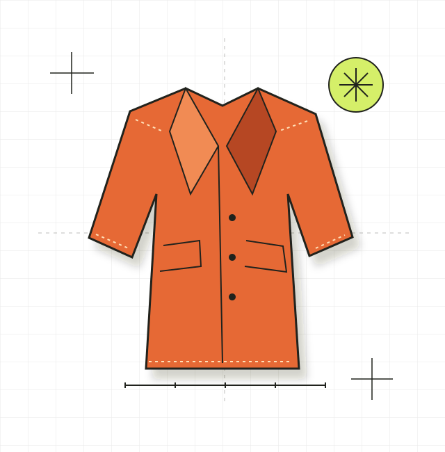

Clothing, with character.
Made-to-order apparel, tailoring, workwear and pieces for celebrations. Start with the garment, the occasion and your own point of view.
Discuss a clothing idea ↗Independent textile studio
Bespoke clothing, hand knitting and textile work. Made to order in a style that feels like you.
Tell us what you have in mindAlternative spirit. A handmade touch.

Tailoring illustration selected.
A little out of the ordinary
Made-to-order apparel, tailoring, workwear and pieces for celebrations. Start with the garment, the occasion and your own point of view.
Discuss a clothing idea ↗Hand knitting and bespoke cross stitch. A personal piece starts with a conversation about colour, style and what you would like to make.
Discuss a textile idea ↗Upholstery and refurbishment projects are considered individually. Share the item and your idea with the studio to discuss what is possible.
Discuss a refurbishment ↗Frock Me Handmade · London
Frock Me is an independent, one-woman label working with bespoke clothing and handcrafted textiles. Alternative and vintage influences meet made-to-order ideas.
Explore the studio’s real work on its official website, then get in touch to discuss your project. Quotes, timing and availability are confirmed by the studio.
Explore the official portfolio ↗Bring the first idea
London, United Kingdom · Please confirm project details directly.